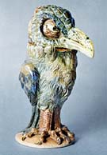
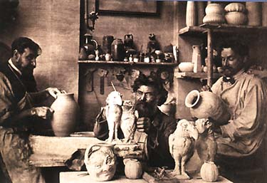
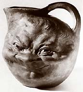

| Martin Brothers
Eccentric British potters
(Click images to enlarge)
The
Martin Brothers pottery was founded by the eldest of the group,
Robert Wallace Martin (1843–1923), who had trained in sculpture
at Lambeth School of Art and later at the Royal Academy of Art.
By the late 1860s he had set up his first workshop, making terracotta
sculpture. In 1873, he set up a new pottery with his brothers, Charles,
Walter and Edwin Martin in Fulham. In 1877 they moved to Southall,
where they made salt-glazed stoneware with Gothic Revival influences,
known as ‘Martinware’.
The Gothic Revival was an 18th century architectural style that
had the architecture of the Middle Ages as its model. European pottery
was also influenced, incorporating neo-gothic elements into design
and decoration.

Above: Walter F. Martin, R. Wallace Martin and Edwin
Martin. (From l. to r.)
The
Martin Brothers became famous for their eccentric, grotesquely modeled
‘Wally Birds’, wheel-thrown and sculpted face jugs,
vases and other items reminiscent of art and architecture of the
Middle Ages. After various difficulties, including a serious fire
in 1910 and deaths in the family, the company closed in 1915.
More Artists of the Week
More Articles
|
{kind=link}
{kind=link}